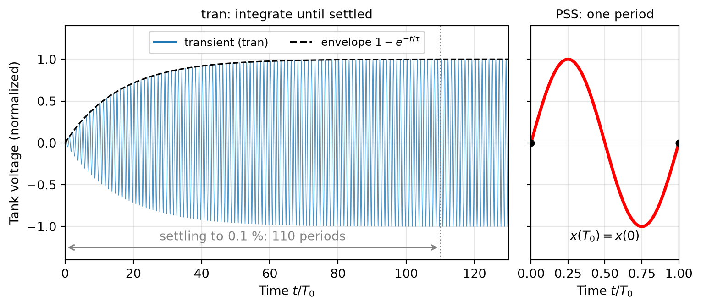
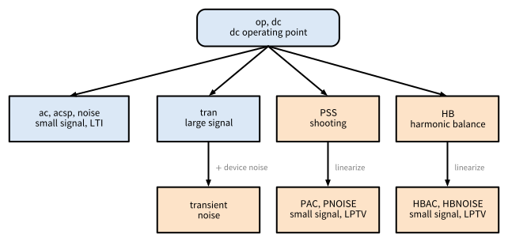
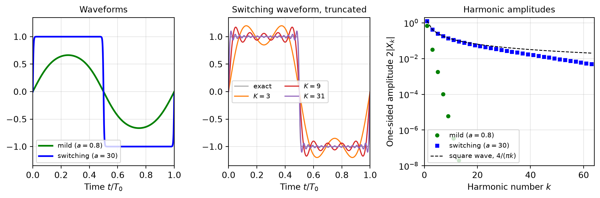
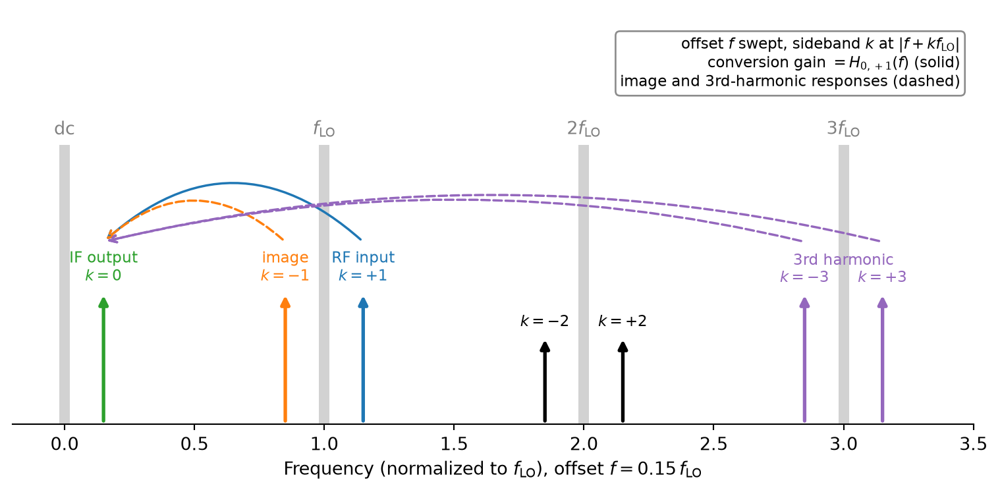
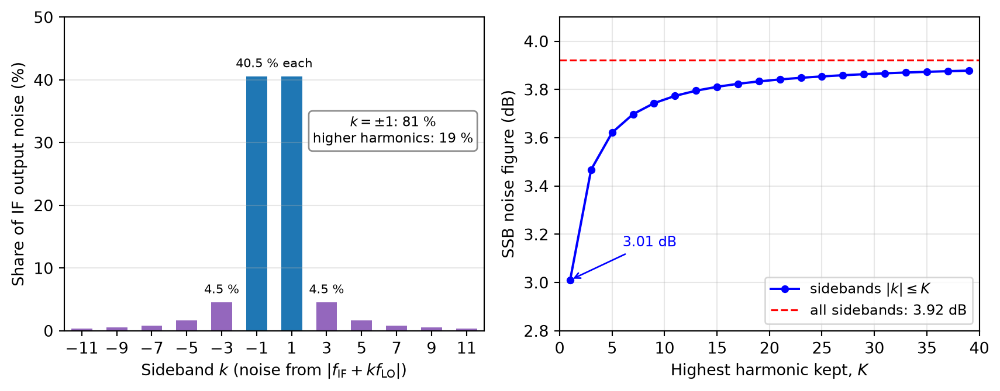
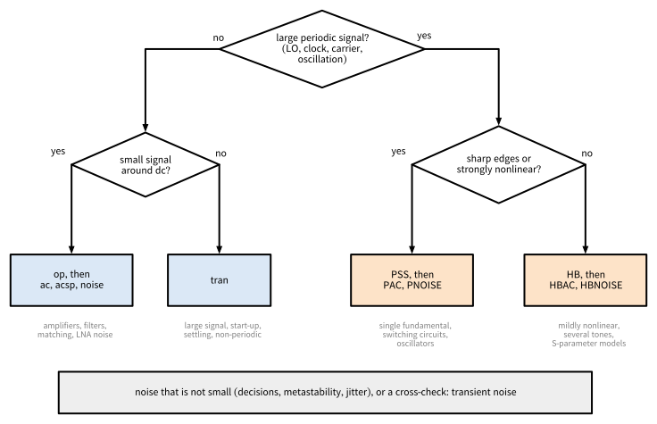

Radio-Frequency Integrated Circuits

Figure 106: Family tree of circuit simulation analyses.
\[ \mathbf{f}(\mathbf{x}(t)) + \frac{\mathrm{d}}{\mathrm{d}t} \mathbf{q}(\mathbf{x}(t)) = \mathbf{u}(t), \tag{70}\]
\[ \mathbf{G}(\mathbf{x}^{(i)}) \, \Delta \mathbf{x}^{(i)} = \mathbf{u}_\mathrm{DC} - \mathbf{f}(\mathbf{x}^{(i)}), \qquad \mathbf{x}^{(i+1)} = \mathbf{x}^{(i)} + \Delta \mathbf{x}^{(i)}, \tag{71}\]
Always Check the Operating Point First
Every small-signal analysis (ac, acsp, noise) linearizes around the operating point and inherits all its errors. Check bias currents, \(g_\mathrm{m}/I_\mathrm{D}\) values, and saturation margins before looking at any other result. Note also that circuits with positive feedback (latches, oscillators) have an operating point that is an unstable equilibrium: it is a valid solution of the equations, but the real circuit never stays there.
Always Check the Operating Point First
For bistable circuits, the operating point may not converge at all, and a defined state (a reset or a nodeset) helps.
\[ \left( \mathbf{G} + j \omega \mathbf{C} \right) \mathbf{X}(j\omega) = \mathbf{U}(j\omega), \qquad \mathbf{G} = \frac{\partial \mathbf{f}}{\partial \mathbf{x}}, \quad \mathbf{C} = \frac{\partial \mathbf{q}}{\partial \mathbf{x}}, \tag{72}\]
\[ a_i = \frac{V_i + Z_0 I_i}{2 \sqrt{Z_0}}, \quad b_i = \frac{V_i - Z_0 I_i}{2 \sqrt{Z_0}}, \quad S_{ij} = \frac{b_i}{a_j} \quad (a_k = 0 \text{ for } k \neq j). \tag{73}\]
\[ S_\mathrm{out}(f) = \sum_i \left| H_i(f) \right|^2 S_i(f), \tag{74}\]
\[ \mathbf{f}(\mathbf{x}_{n+1}) + \frac{\mathbf{q}(\mathbf{x}_{n+1}) - \mathbf{q}(\mathbf{x}_n)}{h_n} = \mathbf{u}(t_{n+1}), \tag{75}\]
Note 9: Transient Simulation Effort of a Mixer
We want to simulate the conversion gain of a downconversion mixer with \(f_\mathrm{LO} = 2.4\,\text{GHz}\) and an IF around 1 MHz, with a frequency resolution of 10 kHz. The simulated time must be at least
\[ T_\mathrm{sim} \geq \frac{1}{10\,\text{kHz}} = 100\,\mu\text{s}. \]
With 50 time points per LO period, the step size is \(h = 1 / (50 \cdot 2.4\,\text{GHz}) \approx 8.3\,\text{ps}\), and we need
\[ N = \frac{T_\mathrm{sim}}{h} = 100\,\mu\text{s} \cdot 50 \cdot 2.4\,\text{GHz} = 1.2 \cdot 10^{7} \]
Transient Simulation Effort of a Mixer
time points, each requiring a Newton solve of the full circuit, and this excludes the settling time. A PSS analysis of the same mixer integrates only a few tens of LO periods (\(10^3\) to \(10^4\) time points, depending on the time resolution per period), and the conversion gain then follows from a PAC analysis with one linear solve per IF frequency (Section 10.2.4).
| Analysis | Solves | Assumption | Typical RF use |
|---|---|---|---|
op, dc sweep |
\(\mathbf{f}(\mathbf{x}_0) = \mathbf{u}_\mathrm{DC}\) | static | bias point, dc transfer curves |
ac |
Equation 72 | small signal, LTI | gain, bandwidth, impedances, loop gain |
acsp |
Equation 72 with ports | small signal, LTI | matching, gain, isolation, stability, passives |
noise |
Equation 74 | small signal, stationary noise | NF of LNAs and baseband, noise contributions |
tran |
Equation 75 | none | start-up, settling, switching, large-signal reference |
\[ \boldsymbol{\phi}_T(\mathbf{x}_0) - \mathbf{x}_0 = \mathbf{0}. \tag{76}\]
\[ \left( \mathbf{\Phi}_T - \mathbf{I} \right) \Delta \mathbf{x}_0 = \mathbf{x}_0 - \boldsymbol{\phi}_T(\mathbf{x}_0), \qquad \mathbf{\Phi}_T = \frac{\partial \boldsymbol{\phi}_T}{\partial \mathbf{x}_0}, \tag{77}\]

PSS Does Not Prove Start-Up
PSS finds a periodic solution, but it does not tell whether the circuit actually reaches it after power-up. Whether an oscillator starts reliably over all corners (or whether a divider locks into the intended mode) must still be checked with a transient analysis.
\[ \mathbf{x}(t) = \sum_{k=-K}^{K} \mathbf{X}_k \, e^{j k \omega_0 t}, \qquad \mathbf{X}_{-k} = \mathbf{X}_k^{*}, \tag{78}\]
\[ \mathbf{F}_k(\mathbf{X}) + j k \omega_0 \, \mathbf{Q}_k(\mathbf{X}) = \mathbf{U}_k, \qquad k = -K, \ldots, K. \tag{79}\]

| Property | PSS (shooting) | HB |
|---|---|---|
| Domain | time | frequency (devices evaluated in time) |
| Unknowns | initial state \(\mathbf{x}_0\) | Fourier coefficients \(\mathbf{X}_k\) |
| Sharp edges, switching | well suited | many harmonics, may not converge |
| Mildly nonlinear | well suited | very efficient |
| Distributed elements, S-parameter data | need a time-domain model | exact (simulator-dependent) |
| Several incommensurate large tones | not possible | well suited |
| High-Q, long settling | efficient | efficient |
| Oscillators | autonomous PSS | autonomous HB (simulator-dependent) |
| Small-signal and noise analyses | PAC, PNOISE | HBAC, HBNOISE |
\[ \mathbf{G}(t) \, \Delta \mathbf{x}(t) + \frac{\mathrm{d}}{\mathrm{d}t} \left[ \mathbf{C}(t) \, \Delta \mathbf{x}(t) \right] = \Delta \mathbf{u}(t). \tag{80}\]
\[ \sum_{l=-K}^{K} \left[ \mathbf{G}_{k-l} + j (\omega + k \omega_0) \, \mathbf{C}_{k-l} \right] \Delta \mathbf{X}_l = \Delta \mathbf{U}_k, \qquad k = -K, \ldots, K, \tag{81}\]

Why an AC Analysis of a Mixer Fails
An ac analysis linearizes around the dc operating point, where the LO source sits at its dc value. The mixer is “frozen” in one LO state, the circuit is LTI, and no frequency conversion takes place: the ac analysis shows at most a feedthrough at the RF frequency, but no IF output. Frequency-converting circuits need PAC or HBAC.
\[ S_\mathrm{out}(f) = \sum_i \sum_{l} \left| \sum_{k} H_{i,k}(f) \, M_{i,k-l} \right|^2 S_i(f + l f_0), \tag{82}\]
Note 10: Noise Folding in an Ideal Switching Mixer
An ideal double-balanced switching mixer multiplies the RF input by a square wave toggling between \(+1\) and \(-1\) with 50% duty cycle (see Section 5.2), whose Fourier coefficients have the magnitude \(|c_k| = 2/(\pi |k|)\) for odd \(k\) and vanish for even \(k\). The switches are noiseless, and the only noise is the white thermal noise of the source resistance, with the PSD \(S_\mathrm{n}\) at every frequency. The noise from each sideband \(k\) folds to the IF with the weight \(|c_k|^2\).
Noise Folding in an Ideal Switching Mixer
By Parseval’s theorem, the sum of all weights equals the time average of the squared switching function, which is one:
\[ S_\mathrm{out} = S_\mathrm{n} \sum_{k} |c_k|^2 = S_\mathrm{n}. \]
The wanted RF signal at sideband \(+1\) is converted with the power gain \(|c_1|^2 = 4/\pi^2\). In the single-sideband (SSB) noise factor, only the source noise at the signal frequency counts as input noise, hence
\[ F_\mathrm{SSB} = \frac{S_\mathrm{out}}{|c_1|^2 S_\mathrm{n}} = \frac{\pi^2}{4} \approx 3.9\,\text{dB}. \]
Noise Folding in an Ideal Switching Mixer
If the signal occupies both sidebands \(\pm 1\) (as in a direct-conversion receiver), the source noise of both counts as input noise, and the double-sideband (DSB) noise factor is \(F_\mathrm{DSB} = \pi^2/8 \approx 0.9\,\text{dB}\), i.e., 3 dB lower. An analysis that keeps only the sidebands \(\pm 1\) (\(K = 1\)) would miss the 19 % of the noise folded from around \(3 f_\mathrm{LO}\), \(5 f_\mathrm{LO}\), and so on, and underestimate the SSB noise figure by 0.9 dB (3.0 dB instead of 3.9 dB, see Figure 110).

Note 11: Example: Phase Noise of an LC Oscillator in VACASK
A parallel LC tank at \(f_0 = 1\) GHz (\(R_\mathrm{p} = 500\,\Omega\), \(C = 10\) pF, \(Q = 31\)), whose loss is compensated by a noiseless negative conductance \(i = -g_1 v + g_3 v^3\) (Van der Pol), oscillates with \(V_\mathrm{p} = 1\) V. The tank resistance is then the only noise source, and the phase noise follows Equation 57 with \(F = 1\), e.g., \(-126.8\) dBc/Hz at 100 kHz offset. VACASK’s pnoise around the autonomous PSS (pss with oscillator=1) reproduces it within 0.02 dB from 10 kHz to 1 MHz, but only with a fine enough time step.
Example: Phase Noise of an LC Oscillator in VACASK
With the default settings, the result flattens below about 20 kHz (\(f_0/50\,000\)) and is already 7.5 dB too low at 10 kHz. The corner depends neither on the number of harmonics (truncharm from 5 to 80 gives the same result) nor on the tolerances, but on the time step with which pnoise integrates the period that it samples for the conversion matrix.
Example: Phase Noise of an LC Oscillator in VACASK
Four times as many points per period (pss_minpts) move it four times lower, and limiting the time step between the sampling points (options tran_fbr=0.02 before the pnoise analysis) moved it below 1 kHz, i.e., \(f_0/10^6\). All numbers are from the VACASK version of the IIC-OSIC-TOOLS container 2026.10.
| Analysis | Builds on | Linearized | Captures | Main limitation |
|---|---|---|---|---|
| transient noise | tran | no | in principle everything: switching, folding, jitter, decisions | statistics, run time, numerical artifacts |
| PSS | shooting (time) | no | periodic steady state, harmonics, oscillation frequency | one common period |
| HB | Fourier series | no | (quasi-)periodic steady state, IM products | many harmonics for sharp edges |
| PAC, HBAC | PSS, HB | yes (LPTV) | conversion gain, sideband transfer, aliasing | small signals only |
| PNOISE, HBNOISE | PSS, HB | yes (LPTV) | cyclostationary noise, folding, mixer NF | small noise only |

Figure 111: Choosing an analysis.
| Circuit | Key metrics | Recommended analyses |
|---|---|---|
| LNA | match, gain, NF, stability, \(P_\mathrm{1dB}\), IIP3, blocker NF | op, acsp and noise, HB for \(P_\mathrm{1dB}\) and two-tone IIP3, HBAC and HBNOISE with a blocker |
| Mixer | conversion gain, SSB/DSB NF, IIP3, image and harmonic rejection | PSS (hard-switching LO) or HB, PAC or HBAC, PNOISE or HBNOISE, two-tone HB for IIP3 |
| Oscillator, VCO | start-up, frequency, tuning range, phase noise | tran for start-up, autonomous PSS, transient noise or periodic noise around the autonomous PSS (simulator-dependent) |
| SC circuits, sampling, N-path | transfer incl. aliasing, settling, \(kT/C\) noise | tran, PSS, PAC and PNOISE if they converge in \(K\) (not HB), transient noise |
| Circuit | Key metrics | Recommended analyses |
|---|---|---|
| Power detector | responsivity, compression, video bandwidth, NEP, NF | HB or PSS power sweep, HBAC or PAC, noise with the LO off, HBNOISE or PNOISE with the LO on, transient noise |
| Power amplifier | output power, efficiency, AM/AM, AM/PM, harmonics | HB power sweep (with EM models of the matching network), PSS for switching PAs, tran |
| Divider, LO generation | operating range, duty cycle, I/Q phase error, jitter | tran, PSS, PNOISE or transient noise for jitter |
| Chopper amplifier | gain, ripple, residual flicker noise | tran, PSS with PAC and PNOISE |
| Comparator, latch | offset, noise, metastability | tran, transient noise |
| Circuit | Key metrics | Recommended analyses |
|---|---|---|
| Passives | Q, S-parameters | acsp with EM-derived models |
Note 12: Example: A 160 GHz Power Detector
The open-source SPARX receiver (Dorrer et al. 2026) contains a Schottky-diode power detector at 160 GHz, characterized with VACASK as a mixer with a 159 GHz LO. Its testbenches use most of the analyses of this appendix:
Example: A 160 GHz Power Detector
Example: A 160 GHz Power Detector
| Analysis | VACASK (container 2026.10) | ngspice 47 |
|---|---|---|
| dc operating point, dc sweep | op, op inside a sweep |
.op, .dc |
| ac | ac |
.ac |
| S-parameters | acsp |
.sp |
| noise | noise |
.noise |
| transient | tran |
.tran |
| transient noise | tran with noisefmax (device noise) |
.tran with trnoise sources |
| PSS | pss (driven and autonomous) |
.pss (experimental, autonomous only) |
| HB | hb (single and multi-tone) |
not available |
| PAC, PNOISE | pac, pnoise |
not available |
| HBAC, HBNOISE | hbac, hbnoise |
not available |
// LO: large-signal sine, RF: small-signal tone at sideband +1 (f_LO + f)
vlo (lo 0) vsource type="sine" sinedc=0 ampl=0.5 freq=2.4G
vrf (rfs 0) vsource dc=0 spur={1} smag=[1]
rs (rfs rf) resistor r=50
control
var flo=2.4G
analysis op1 op
// large signal: periodic steady state with the LO, stored for reuse
analysis pss1 pss tper=1/flo tstab=20/flo store="lo_ss"
// conversion gain from the RF (sideband +1) to the IF (sideband 0)
analysis pac1 pac ( ic="lo_ss" psssolve=0 truncharm=40 outharm=0
from=100k to=100M mode="dec" points=10 )
// output noise at the IF, gain from the RF at sideband +1 (SSB NF)
analysis pn1 pnoise ( ic="lo_ss" psssolve=0 truncharm=40
in="vrf" inharm=1 out="out" outharm=0
from=100k to=100M mode="dec" points=10 )
endcKey Takeaways
Key Takeaways